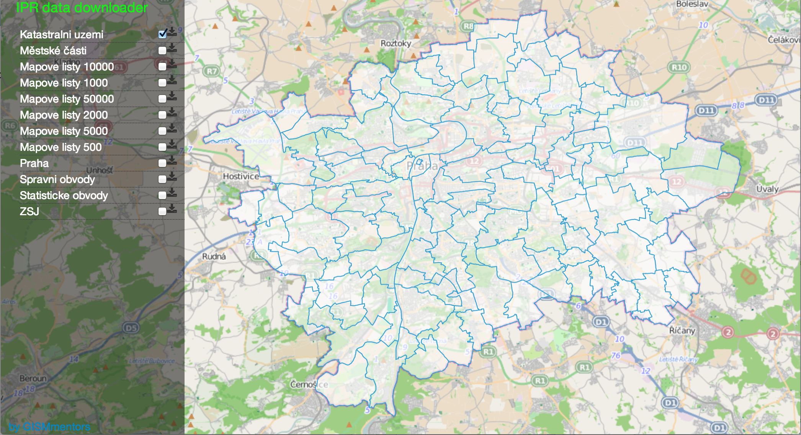
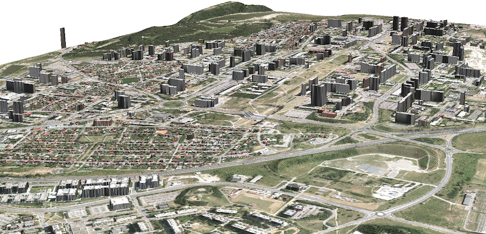
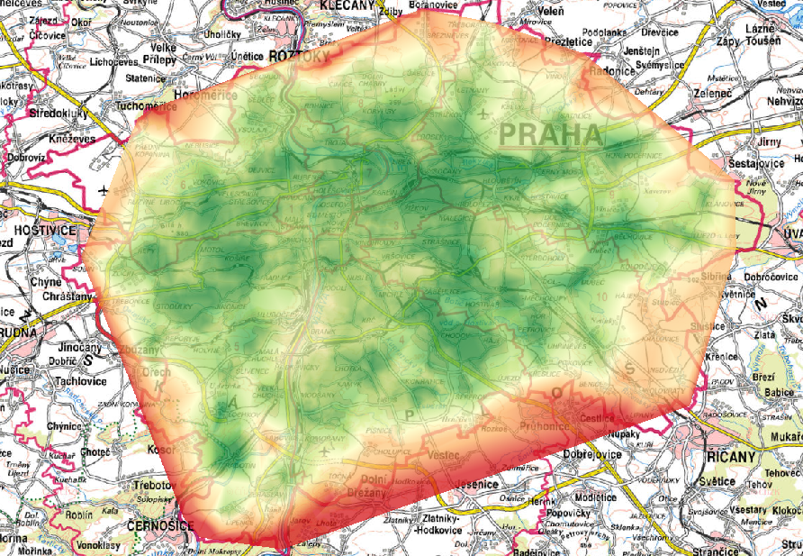
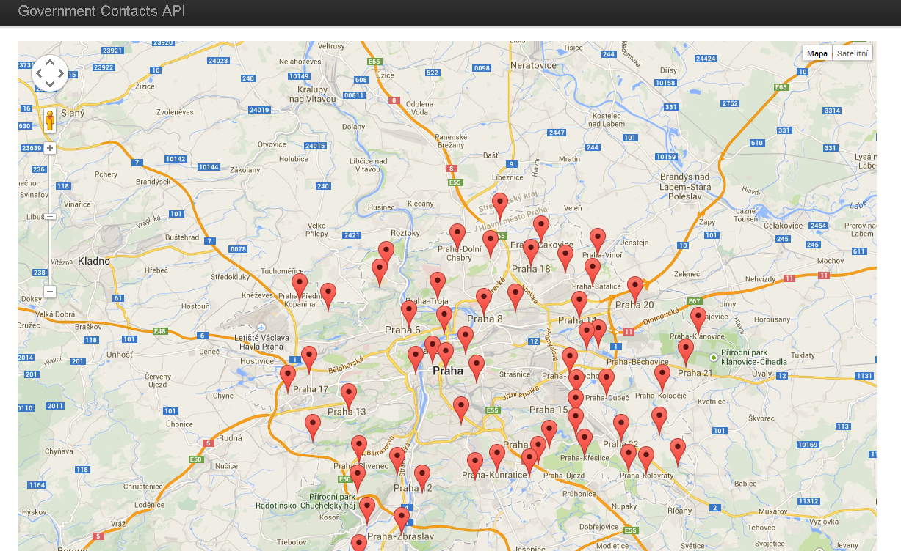
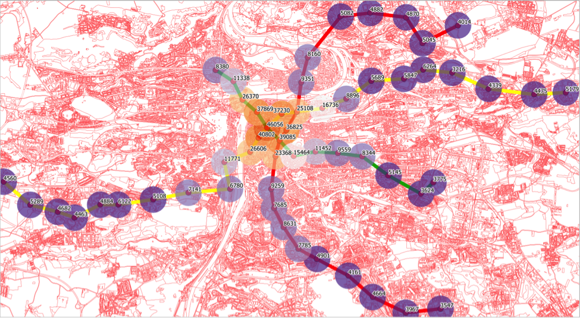

Stahujte pohodlně prostorová data z IPR ve formátech KML, GML, SHP
By GISMentors, www

By Jáchym Čepecký
By Honza Cibulk, www mapa
Snažili jsme se dokončit aplikaci, což je seznam všech úřadů v ČR. Přidávali jsme geo data, které umožní vyhledávat úřady podle polohy (např. chceme znát všechny úřady do 50km od nějakého místa) případně podle krajské / okresní / obecní příslušnosti. Chtěli jsme udělat nad daty mashup pro zobrazení dopravní dostupnosti úřadů v Praze s využitím dat z IPR (dataset zastávek MHD).
Zkoumani vztahu mezi cenou ctverecniho metra stavebniho pozemku a vzdalenosti stanice metra od centra Prahy V ramci geohakatonu na zaklade ziskanych datovych sad (cenova mapa stavebnich pozemku, zastavky metra a linky) byla prozkoumana zavislost ceny ctverecniho metra stavebniho pozemka od vzdalenosti stanice od centra.
By Dimitri Kozuch
